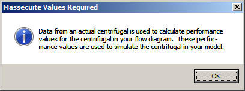
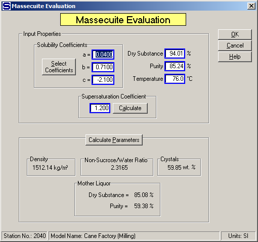

Centrifugal evaluations are used by Sugars to evaluate the separation of sucrose crystals and mother liquor from a massecuite processed by a centrifugal during a simulation. The performance calculations for a centrifugal station are a direct result of the input data provided. Sugars uses the input data to do a material balance for the station to find the amount of mother liquor in the massecuite and wash flow into the centrifugal that is purged and the amount of sucrose crystals that are lost to the green or molasses (and wash flow out if a 3-Output centrifugal is being evaluated).
Frequent updating of the centrifugal input data and performance calculations will provide the best simulation accuracy for a factory because of the changing nature of the centrifugal station. Further details regarding the method of calculation for centrifugal stations are given in the Theory > Centrifugal Calculations section.
The evaluation of both 2-Output and 3-Output centrifugals is initiated by first doing an evaluation of the massecuite into the centrifugal.

The above window shows the message window that appears when a new centrifugal station is being evaluated for the first time. This message window will only appear if the centrifugal has not been previously evaluated. Click on the OK button to close the window and begin the evaluation by entering data in the Massecuite Evaluation window (shown below with data already entered).
The massecuite characteristics are obtained from an actual sample of the massecuite going into the centrifugal being evaluated. Massecuite data that needs to be provided from an actual sample includes the percent dry substance (%DS), purity, temperature and supersaturation of the massecuite as it flows into the centrifugal. Also, the massecuite 'a', 'b' and 'c' coefficients should be entered that correspond to the massecuite being evaluated (that is, the coefficients may be different for the actual massecuite than the coefficients being used in the model). After the data is entered, the calculated parameters give the specific weight, non-sucrose/water ratio, weight percent of crystals, and mother liquor dry substance and purity for the massecuite (see window below).

If the supersaturation coefficient is not known, it can be calculated from a measurement of the mother liquor dry substance and purity. These values can be entered on the window that appears if the Calculate button is pressed that is to the right of the Supersaturation Coefficient field. The non-sucrose/water ratio is maintained when the supersaturation coefficient is calculated. That is, the non-sucrose/water ratio as calculated from the massecuite dry substance and purity will be maintained for the mother liquor (see window below).
After the massecuite evaluation is completed, the centrifugal performance evaluation is done by Sugars using measured data for the output flows from the centrifugal. The windows for entering this data are different for the different types of centrifugals; that is, the 2-Output Centrifugal (see 2-Output Centrifugal Properties) and the 3-Output Centrifugal (see 3-Output Centrifugal Properties) have their own entry windows. Data is entered into these windows and Sugars checks the data for consistency and then calculates the performance of the centrifugal. The performance calculations are displayed on different windows for each type of centrifugal. That is, the 2-Output Centrifugal performance is shown on the 2-Output Centrifugal Performance Calculation window (see 2-Output Centrifugal Evaluation), and the 3-Output Centrifugal performance is shown on the 3-Output Centrifugal Performance Calculation window (see 3-Output Centrifugal Evaluation). A discussion of each of these windows follows in their respective sections.
2-Output Centrifugal Properties
3-Output Centrifugal Properties
2-Output Centrifugal Evaluation